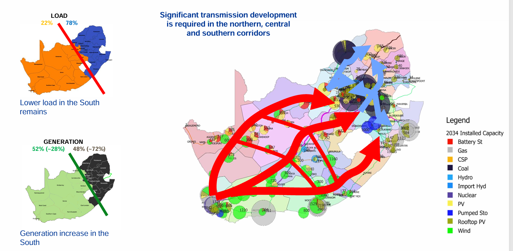
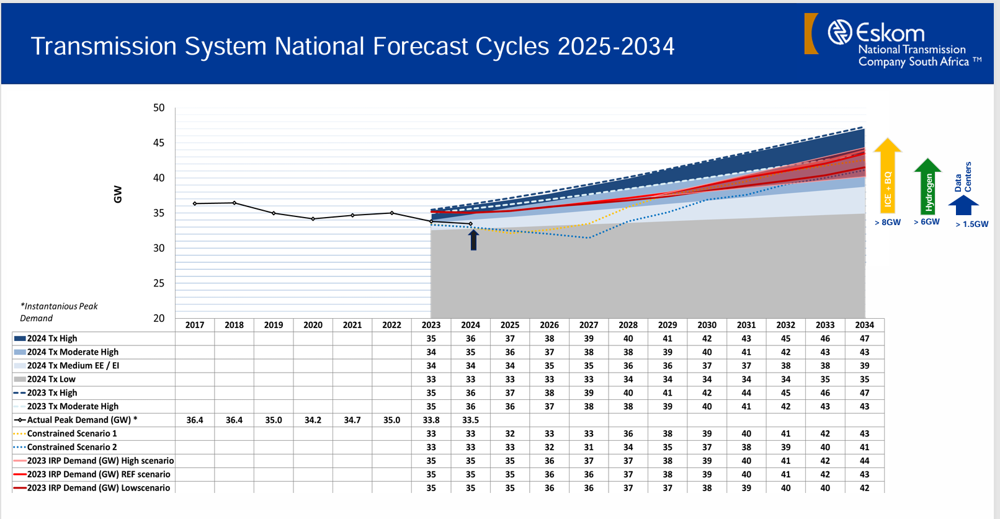

Transmission Development Plan 2025-2034: the National Transmission Company South Africa's strategy for long-term grid expansion and reinforcement.
The Transmission Development Plan (TDP) 2025-2034 sets out the transmission network investments required to deliver a reliable, resilient, and future-ready grid across South Africa. It focuses on building the high-voltage backbone that will connect new generation capacity, support demand growth, and enable the transition to renewable and cleaner energy sources.
The plan is aligned with the broader energy transition objectives, identifying key reinforcement projects, new corridors, substation upgrades, and system strengthening measures needed to maintain supply security and unlock new power sources.
Here are the original TDP figures exactly as they appear in the plan.

Below is the TDP peak demand outlook and transmission requirement graph.

The TDP is the transmission counterpart to the Integrated Resource Plan. It ensures that generation plans are matched by the physical grid capacity needed to move power from source to demand centres. Without the TDP, new generation projects may be constrained by bottlenecks, delayed by network reinforcement schedules, or unable to deliver reliably to customers.
This plan is especially important for South Africa’s energy transition because it helps integrate renewable energy and supports a more flexible, modern grid while also addressing the challenges of ageing infrastructure and rising demand.
View the full TDP 2025-2034 document